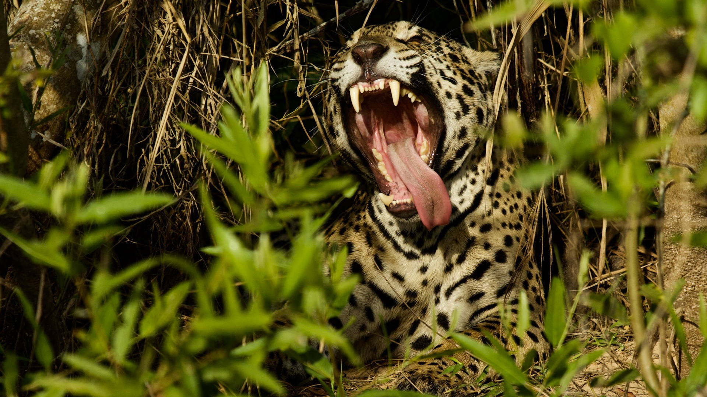
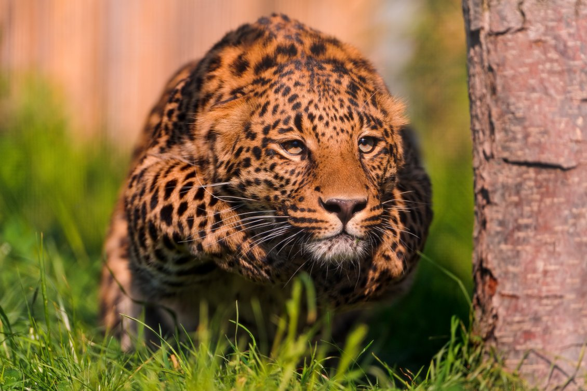
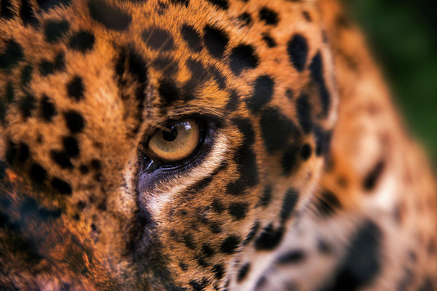

Jaguars, The World's 3rd largest cat species, Is an Apex predetor of many parts of Brazil, Central America, and even in the very south of the United states.
Jaguars can range in weight, anywhere between 175- 270 pounds. With some Jaguars even getting up to 340 pounds. And get up to 6.1 ft long Where they live can also effect how big they get, With those living in the Pantanal Wetlands tending to grow bigger, than those that live in the Amazon Rainforest, But no matter how small they are, they're always deadly.
"Ok, to put this into perspective, the averge man can bench press around 170 pounds, and can lift aound 175-185 pounds,Even some of the best lifters can only lift can only lift 350-400 pounds, And bench around 250-300 pounds A healthy jaguar could(to put it in relatable terms) could lift 700 pounds if it tried, A paw swipe from a Jaguar Would crack your skull with ease. They are also more than capaple of hauling prey up a tree. Another impressive feat about them is that they have the strongest bite out of all the big cats. Yes, even stronger than a tiger's. 1500 PSI! That's the 6th most powerful bite in the animal kingdom, And 2nd of all mammals. Lets just say if it gets a hold of your hand, Well.. you can say goodbye to it because you aren't getting it back.
.jpg) They are the most versitile cat species
They are the most versitile cat species
Jaguars can swim well, climb well, and even hunt in the water, as well as carry prey 3 times their size into the trees. and even occasionally leap from trees to catch prey. And they're able to see prey in merky water or prey thats camoflauged thanks to their incredible eyesight.
